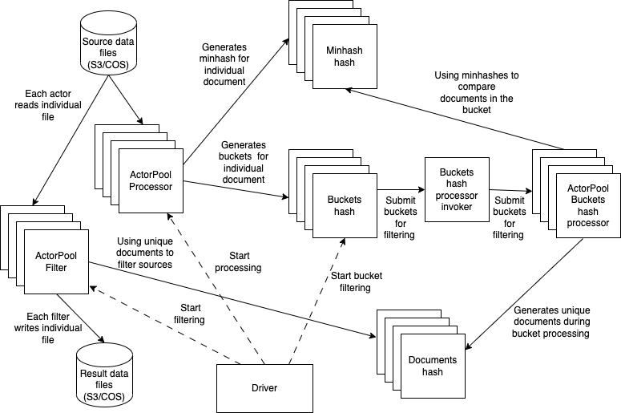

Fuzzy Dedup
Please see the set of transform project conventions for details on general project conventions, transform configuration, testing and IDE set up.
Summary
The basic implementation of the fuzzy dedup is based on MinHash. Also see here for more details. The architecture of the implementation is presented here:

The main components of implementation are driver, processors (implemented as actor pools) - table processor, table filter and bucket hash processor, and hash actors - minhash, buckets and docs.
The complication of mapping this model to transform model is the fact that in this model assumes a two pass processing, while a transform model is a single pass. The solution to this mismatch is to use transform runtime to implement the first path and use the native transform pipeline to implement filtering.
Transform runtime
The transform runtime is implementing complete first path of the fuzzy deduping: * creates bucket and minhash collectors * implements initial file processing to populate bucket and minhash caches * creates doc collectors * implement bucket processing * Clean up everything except for doc collectors in preparation to filter, that is implemented by the framework proper The main components of runtime are described below
TableProcessor Actor
Table processing actor is implemented following framework itself is implemented as a pair -
FdedupTransform implementing the actual transformation and and
transform table processor
(from the framework itself).
DocsMinHash Actor
This actor stores MInHashes
BucketsHash Actor
This actor actor
BucketHashProcessor
BucketHash actor implement the actual buckets processing, removing duplicates. Implementation of this actor allows to better manage this "expensive" process, by using Actor pool load balancing thus minimizing overall time for this operation. Instead of pre partitioning buckets, it is using dynamic load partitioning. We also are processing "longest" buckets first thus further improving performance. To further improve the overall performance we can in future implement bucket splitting - its faster to process more smaller buckets then the long ones
BucketHashProcessor
This actor is queueing up requests to the BucketHashProcessor actor pool, which load
balances their execution
DocCollector Actor
This actor is a collector for unique documents
Transformer
In the fuzzy dedup implementation, the transformer only implements filtering. For every
table, it checks document ids with the DocumentsCollector cache and removes all of the rows which do not have ids in
the hash
Snapshotting
Fuzzy dedup often runs on very large data sets and implements three very distinct phases:
* Building buckets
* Processing buckets
* Filtering data
To improve recoverability of fuzzy dedup, current implementation includes snapshotting - at the end of the first two
phases we snapshot the current state of execution - bucket and minhash actors after the first phase and document actors
after the second. This snapshotting provide code with the ability to restart from the existing snapshot. You can use one
of two configuration flags (assuming snapshots exist):
* use_bucket_snapshot to start from the second phase
* use_doc_snapshot to start from the third phase
Building
A docker file that can be used for building docker image. You can use
make build to build it
Configuration and command line Options
The set of dictionary keys holding BlockListTransform configuration for values are as follows:
- bucket_cpu - specifies number of CPUs for bucket actor
- doc_cpu - specifies number of CPUs for doc actor
- mhash_cpu - specifies number of CPUs for minhash actor
- num_doc_actors - specifies number of doc actors
- num_bucket_actors - specifies number of bucket actors
- num_minhash_actors - specifies number of minhash actors
- num_preprocessors - specifies number of preprocessors
- num_permutations - specifies number of permutations
- threshold - specifies threshold
- shingles_size - specifies shingles size
- japanese_data - specifies whether to use japanese specific document splitting
- delimiters - specifies delimiter for non japanese document splitting
- snapshot_delay - delay between different actors reading/writing snapshot not to overwhelm storage
- -use_bucket_snapshot_ - run from the existing buckets snapshot (bypass building buckets)
- -use_doc_snapshot_ - run from the existing docs snapshot (bypass building and processing buckets)
Above you see both parameters and their values for small runs (tens of files). We also provide an estimate to roughly determine cluster size for running transformer.
Running
Launched Command Line Options
When running the transform with the Ray launcher (i.e. TransformLauncher), the following command line arguments are available in addition to the options provided by the launcher.
--fdedup_doc_column FDEDUP_DOC_COLUMN
document column name
--fdedup_id_column FDEDUP_ID_COLUMN
integer document id column name
--fdedup_cluster_column FDEDUP_CLUSTER_COLUMN
cluster column name
--fdedup_bucket_cpu FDEDUP_BUCKET_CPU
number of CPUs per bucket hash
--fdedup_mhash_cpu FDEDUP_MHASH_CPU
number of CPUs per minhash hash
--fdedup_doc_cpu FDEDUP_DOC_CPU
number of CPUs per doc hash
--fdedup_num_doc_actors FDEDUP_NUM_DOC_ACTORS
number of doc actors to use
--fdedup_num_minhash_actors FDEDUP_NUM_MINHASH_ACTORS
number of minhash actors to use
--fdedup_num_bucket_actors FDEDUP_NUM_BUCKET_ACTORS
number of bucket actors to use
--fdedup_num_preprocessors FDEDUP_NUM_PREPROCESSORS
number of preprocessors to use
--fdedup_num_permutations FDEDUP_NUM_PERMUTATIONS
number of permutations
--fdedup_threshold FDEDUP_THRESHOLD
threshold
--fdedup_shingles_size FDEDUP_SHINGLES_SIZE
number of words in shingle
--fdedup_delimiters FDEDUP_DELIMITERS
delimiter for splitting document
--fdedup_snapshot_delay FDEDUP_SNAPSHOT_DELAY
snapshot delay time
--fdedup_use_bucket_snapshot FDEDUP_USE_BUCKET_SNAPSHOT
flag to continue with bucket snapshot
--fdedup_use_doc_snapshot FDEDUP_USE_DOC_SNAPSHOT
flag to continue with doc snapshot
--fdedup_random_delay_limit FDEDUP_RANDOM_DELAY_LIMIT
maximum delay between read
These correspond to the configuration keys described above.
Running the samples
To run the samples, use the following make targets
run-cli-sample- runs src/fdedup_transform_ray.py using command line argsrun-local-sample- runs src/fdedup_local_ray.pyrun-s3-sample- runs src/fdedup_s3_ray.py
These targets will activate the virtual environment and set up any configuration needed.
Use the -n option of make to see the detail of what is done to run the sample.
For example,
make run-cli-sample
...
Then
ls output
To see results of the transform.
Transforming data using the transform image
To use the transform image to transform your data, please refer to the running images quickstart, substituting the name of this transform image and runtime as appropriate.